← Back to Projects
03 • Private Villas
Badr Heights Villas
Private villas shaped by light, water, privacy and calm domestic luxury.
QUIET LUXURY, BUILT IN
Design Narrative
Luxury here is measured by privacy, quiet and the effortless transition between room, courtyard, water and garden.
A restrained luxury language is used to make each villa feel private, warm and connected to landscape without becoming visually excessive.
Framed courtyards, shaded terraces, private pools and seamless indoor–outdoor living.
5 villas4BR + 5BR unitsPrivate poolsFramed courtyardsIndoor–outdoor livingLandscape privacy
Strategic Lens — Private Living Value
How can a small villa collection feel exclusive without becoming visually loud?
Frame private outdoor rooms and use landscape as the first layer of architecture.
Deep overhangs, courtyards, pools, warm stone and controlled views shape a calm domestic environment.
Living spaces open to water and garden while privacy remains layered and protected.
Restraint becomes a premium quality because every gesture supports daily living.
Curated Visual Gallery
Badr Heights Villas
A visual sequence of architecture, atmosphere, movement and detail.
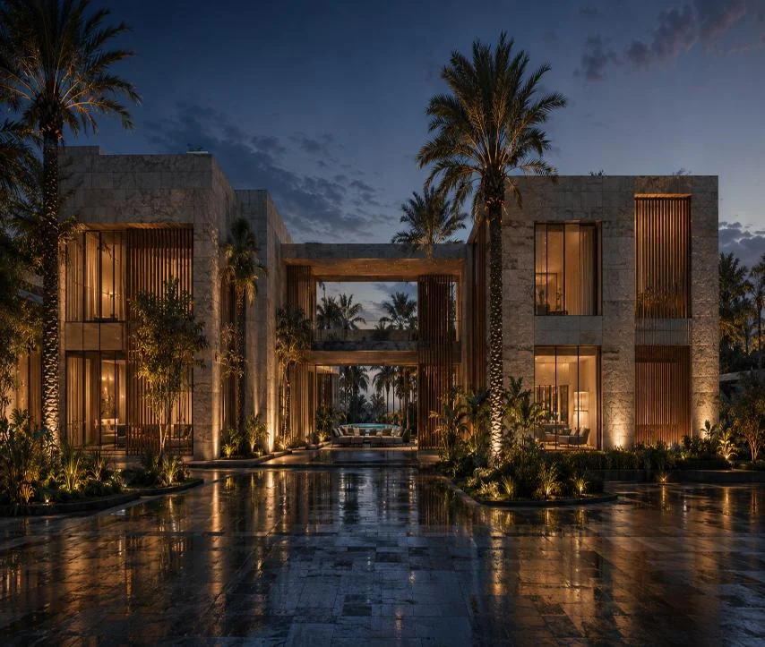
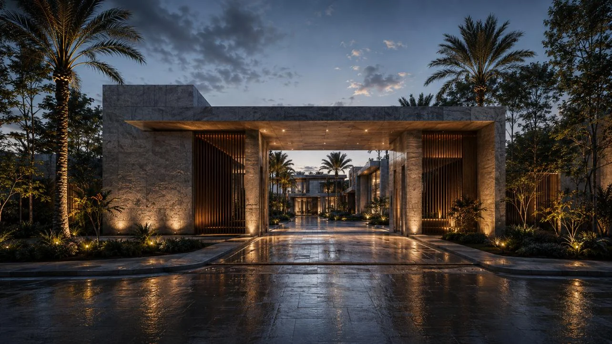
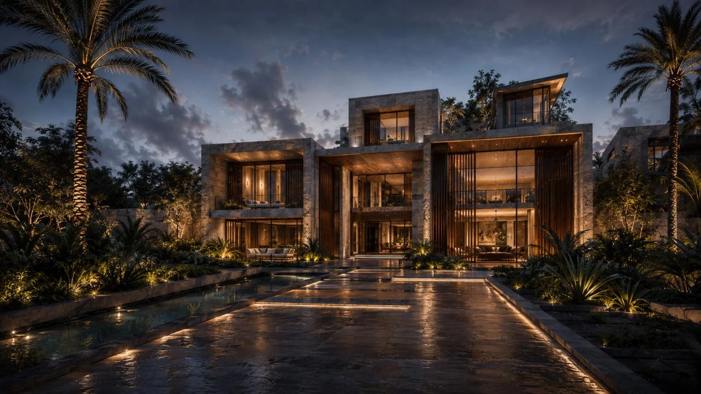
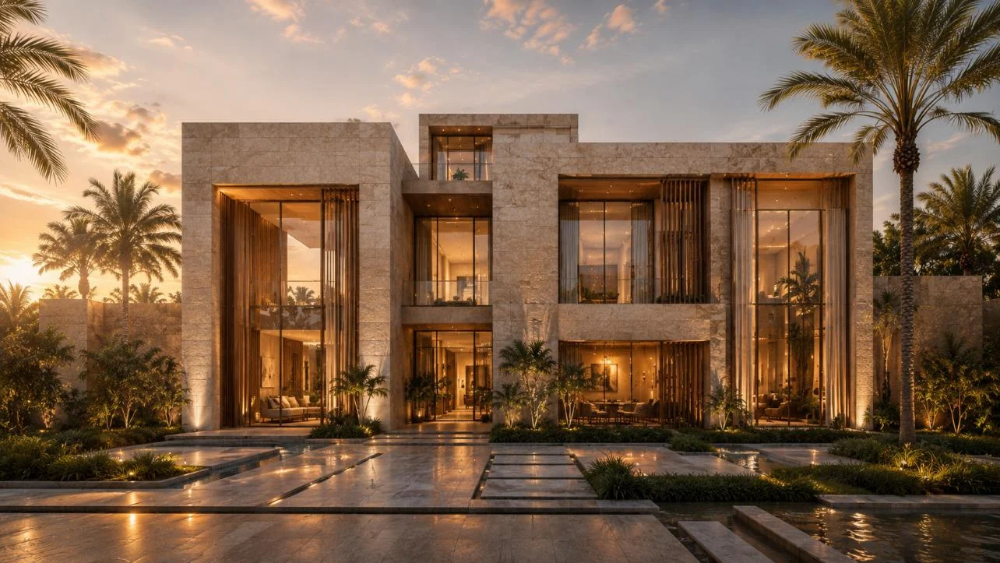
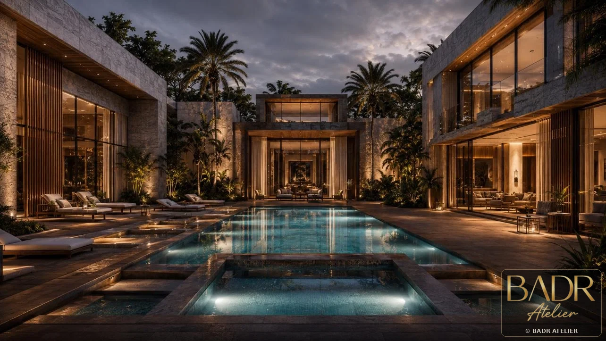
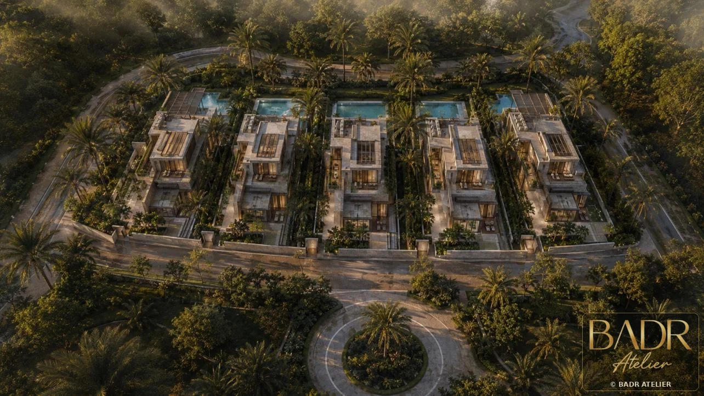
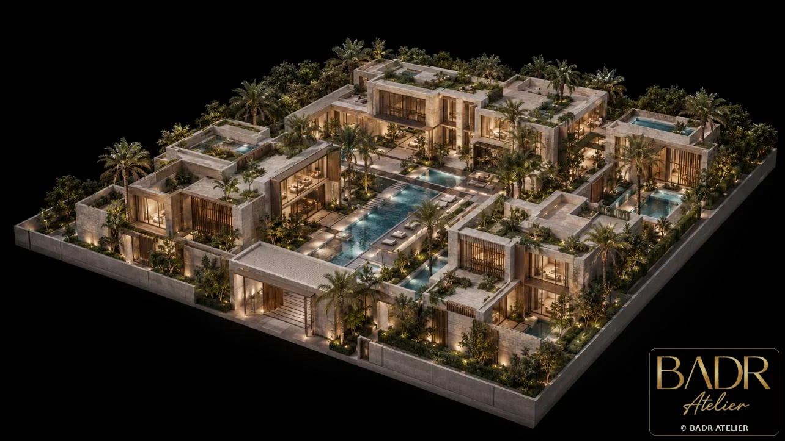
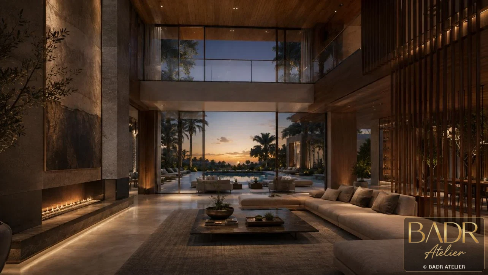
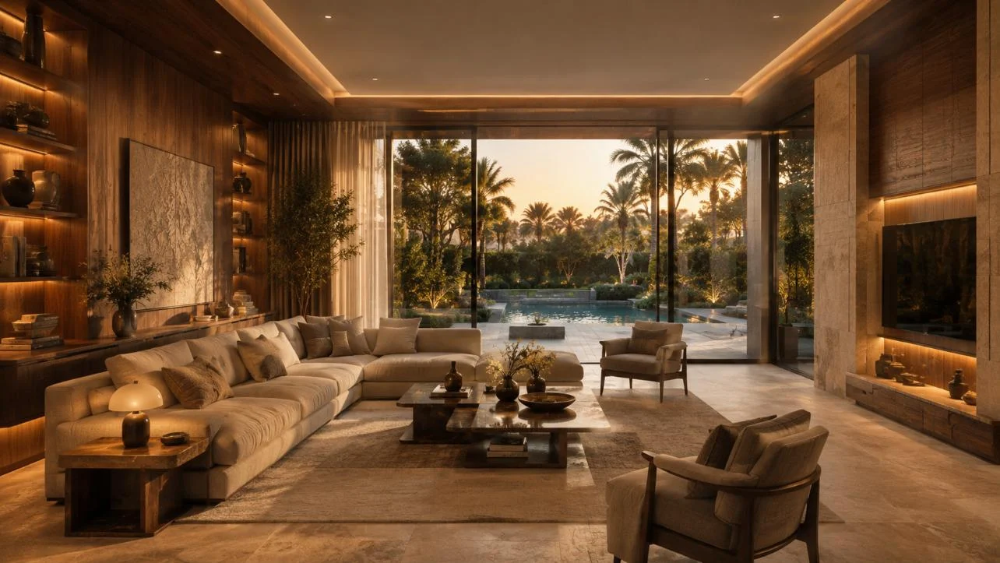
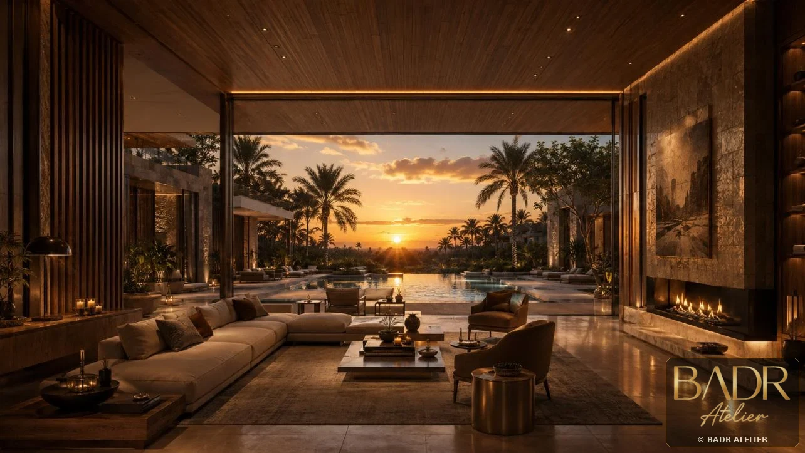
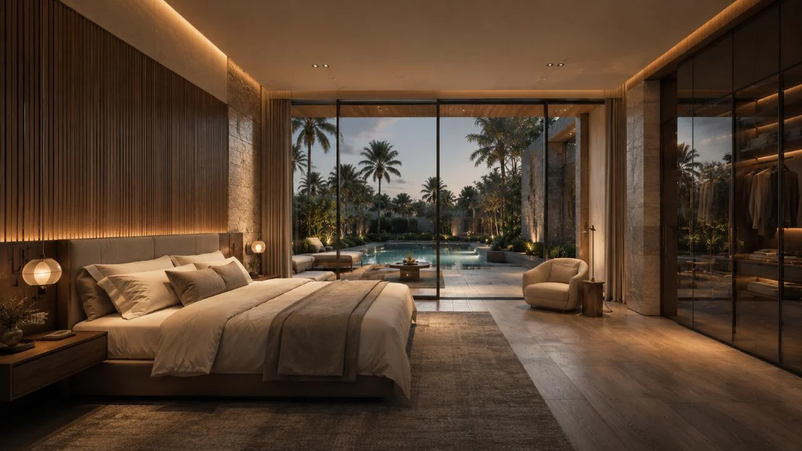
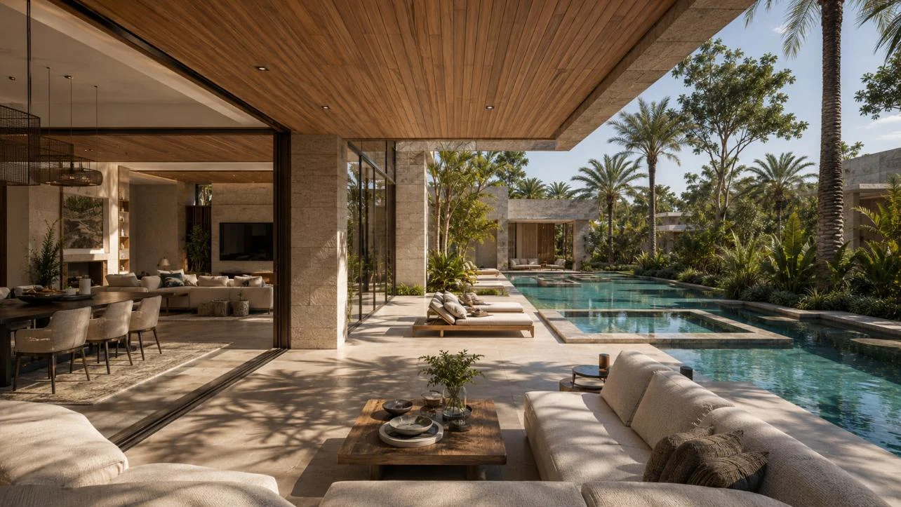
Key Features
- 5 villas
- 4BR + 5BR units
- Private pools
- Framed courtyards
- Indoor–outdoor living
- Landscape privacy
Spaces + Experiences
- Villa arrival
- Living rooms
- Private gardens
- Pool courts
- Bedroom suites
- Outdoor terraces